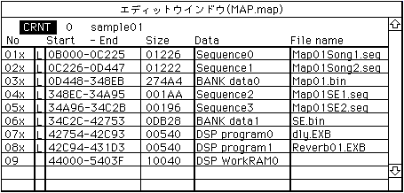

★SOUND Manual
★サウンドシュミレータマニュアル
★SOUND Manual
★サウンドシュミレータマニュアル

SDDRVS.tskがカレントのフォルダにないときに内蔵のSDDRVS.tskを送らないバグを解消。
コレクトファイルの読み込みに不都合がありました。
マップファイルのフォーマット変更に伴いコレクトファイルのフォーマット対応が行われていなかったので Ver3.00 で作ったコレクトファイルに限って読めませんでした。
CartDevでメモリダンプ機能を使用した際に68000CPUが停止状態になってしまうバグを解消。
内蔵のサウンドドライバを最新のVer2.20に差し替えました
エイリアスによるファイル検索機能を強化しました
★SOUND Manual
★サウンドシュミレータマニュアル